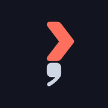
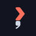

A shell-prompt chevron fused with a comma: coral prompt, off-white “text,” on midnight — reads like a real terminal line.


60
Chevron (prompt) #FF6F5E coral
Comma (text) #CFD6E4 off-white
Background #12151F midnight · flat (no glow)
Master: assets/semicolon-mark.svg · icon: App/Assets.xcassets/AppIcon.appiconset/icon.png ·
regenerate any theme/size via scripts/logo_render.py.